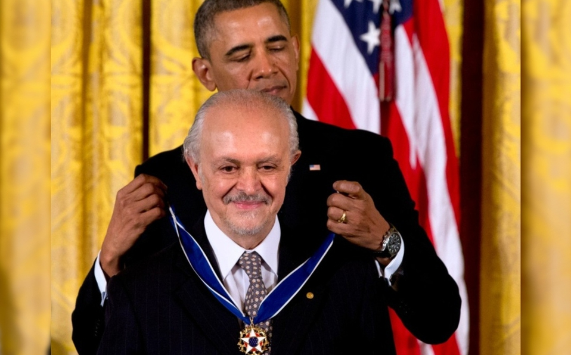

José Mario Molina Pasquel y Henríquez
Sus padres fueron Roberto Félix Molina Pasquel y Leonor Henríquez. Su padre fue embajador de México en Etiopía, en Australia y en Filipinas. En 1960, Mario Molina ingresó a la Facultad de Química de la UNAM para estudiar ingeniería química. En 1965, después de graduarse, continuó sus estudios de posgrado en la Universidad de Friburgo en Alemania, donde pasó casi dos años investigando en cinética de polimerizaciones. Entre 1967 y 1968, pasó algunos meses en París y en Ciudad de México. En 1968 ingresó al programa de doctorado en fisicoquímica de la Universidad de Berkeley, California.
En Berkeley se incorporó al grupo de investigación del profesor George C. Pimentel.5 Molina obtuvo el doctorado en 1972 y permaneció un año más en Berkeley, antes de convertirse, en 1973,era investigador asociado en la Universidad de California, Irvine, junto con el Profesor Frank Sherwood Rowland.
Mario Molina fue nombrado miembro del profesorado de Irvine en 1975, y fue líder de sus propias investigaciones a partir de entonces. Después de siete años en Irvine, decidió explorar la vida profesional extraacadémica y se unió al Jet Propulsion Laboratory, en el grupo de física y química molecular. Volvió a la academia en 1989, al incorporarse al Instituto Tecnológico de Massachusetts (MIT) como profesor, y adquirió la ciudadanía estadounidense. Desde 2005 fue profesor de la Universidad de California en San Diego.
Realizó diversas investigaciones en el ámbito de la química ambiental sobre el problema del ambiente. En 1974, Rowland y Molina daban cuenta de los resultados de sus investigaciones en un artículo publicado en la revista Nature. En él advertían de la creciente amenaza que el uso de los gases CFC suponía para la capa de ozono, aviso que en aquel momento fue criticado y considerado exagerado por un sector de investigadores. Sin embargo, la tenacidad y el convencimiento que depositaron en sus propias teorías conquistó las mentes de miles de personas. Tras arduas deliberaciones, Molina y Rowland consiguieron la aprobación a sus tesis en encuentros científicos internacionales y estuvieron presentes en las reuniones en las que se fijaron los parámetros de control que debía hacer cada país en la emisión de CFpo.
En 1989, Molina trabajó en el Departamento de Ciencias Atmosféricas, Planrias y del Instituto de Tecnología de Massachusetts (MIT) como investigador y profesor. En 1994 su trabajo le brindó el nombramiento, por parte del presidente de Estados Unidos, como miembro del comité que le asesoró sobre asuntos de ciencia y otro reconocimiento tecnológico, al que pertenecen 21 científicos.
Su trayectoria de trabajo y su perseverancia en pro de su preocupación por un problema que afecta a todo el planeta lo hizo acreedor, el 11 de octubre de 1995, junto con Sherwood Rowland, al Premio Nobel de Química, por ser los pioneros en establecer la relación entre el agujero de ozono y los compuestos de cloro y de bromuro en la estratosfera. El galardón también se concedió al neerlandés Crutzen, del Instituto Max-Planck de Química de Mainz (Al), quien halló en 1970 que los gases contaminantes tienen un efecto destructor en esa capa, sin descomponerse.
El 4 de diciembre de 1995, Molina, Rowland y Crutzen fueron premiados además por el Programa de las Naciones Unidas para el Medio Ambiente (PNUMA) por su contribución a la protección de la capa de ozono.
Molina poseía también los premios Tyler (1983) y Essekeb (1987) que concede la American Chemical Society, el Newcomb-Cleveland de la Asociación estadounidense para el Avance de la Ciencia (1987) por un artículo publicado en la revista Science que explicaba sus trabajos sobre la química del agujero de ozono en la Antártida y la medalla de la National Aeronautics and Space Administration (NASA) (1989) en reconocimiento a sus logros científicos. Mario Molina señaló en alguna ocasión que cuando eligió el proyecto de investigar el destino de los CFC en la atmósfera lo hizo simplemente por curiosidad científica. No consideró las consecuencias que conllevarían sus estudios, pero cuando se dio cuenta de la envergadura de su descubrimiento se sintió sobrecogido, porque su aporte no solo ha contribuido a la comprensión de la química atmosférica, sino que además ha supuesto un profundo impacto en la conciencia ecológica de todo el mundo. En ese momento era un activista en política de la ciencia.
El 15 de octubre de 2015 se inauguró el Edificio Mario Molina en la Ciudad Universitaria de la UNAM, un espacio que vincula la investigación entre la Facultad de Química y la Industria. Fue construido como parte de la celebración de los 100 años de la Facultad de Química y está orientado a brindar soluciones a problemas relacionados con la protección ambiental, el uso de energía y la prevención del cambio climático.
Lamentablemente falleció el miércoles 20 de octubre del año 2020 en la Ciudad de México a causa de un infarto (Q.E.P.D.)
para informacíon más completa visita aquíclick aquí